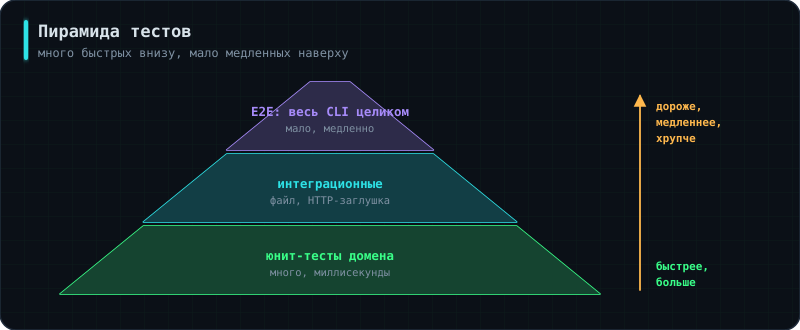

Аналогия: тесты — не доказательство, что код идеален, а сигнализация: она не мешает войти, но громко сообщает, если что-то сдвинулось.
Голые функции с assert из §8 работают, но запускать десятки таких функций руками невозможно. Стандарт индустрии — pytest:
# tests/test_alerting.py
import pytest
from uptime_checker.domain.models import Target, Result
from uptime_checker.domain.alerting import AlertPolicy
@pytest.fixture
def target():
return Target("shop", "https://shop.example.com")
@pytest.fixture
def policy():
"""Свежая политика для каждого теста."""
return AlertPolicy(fail_threshold=3)
def make(target, ok):
return Result(target, ok=ok, latency_ms=10)
def test_recovery_sends_resolved(policy, target):
for _ in range(3):
policy.decide(make(target, ok=False))
assert policy.decide(make(target, ok=True)) == "resolved"
@pytest.mark.parametrize("threshold,failures,expected", [
(1, 1, "alert"),
(3, 2, None),
(3, 3, "alert"),
])
def test_threshold_table(target, threshold, failures, expected):
policy = AlertPolicy(fail_threshold=threshold)
decisions = [policy.decide(make(target, ok=False)) for _ in range(failures)]
assert decisions[-1] == expected
Три вещи, ради которых берут pytest. Автоматический поиск: он сам находит все файлы test_*.py и функции test_*, ничего регистрировать не нужно. parametrize прогоняет один тест на списке случаев — вместо трёх почти одинаковых функций получается одна с таблицей. Фикстуры готовят общее состояние и делают это заново для каждого теста, так что тесты не влияют друг на друга.
pytest # прогнать всё
pytest -v # с именами тестов
pytest tests/test_alerting.py::test_threshold_table # один конкретный
pytest -x # остановиться на первом падении
pytest --cov=uptime_checker # покрытие кода тестами
💡Про покрытие
Покрытие показывает, какая доля строк была выполнена хотя бы одним тестом. Полезная метрика, но обманчивая: сто процентов покрытия не означают, что код правильный — только что он был выполнен. Тест без единого assert тоже даёт покрытие. Требование «не ниже 80%» встречается в командах как порог в пайплайне, но гнаться за цифрой ради цифры бессмысленно; важнее покрыть тестами то, что ломается.
Детерминированность. Код, который зависит от времени, сети или случайности, плохо тестируется, пока эта зависимость неуправляема. Решение — подставлять её снаружи: фиктивный клиент вместо сети (§8), фиксированное время вместо datetime.now(), random.seed(42) вместо настоящей случайности. Тест, который иногда падает без изменений в коде (flaky test), хуже отсутствующего: ему перестают верить и в итоге отключают.